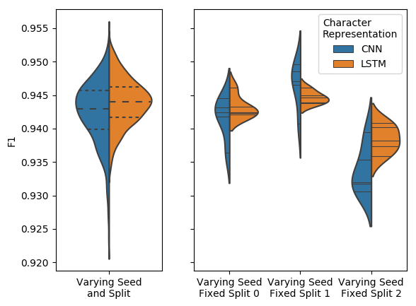

FIESTA Documentation¶
FIESTA (Fast IdEntification of State-of-The-Art) package as the name suggests allows you to easily find the best model from a set of models taking into account two sources of randomness data splits and random seeds.
This package is also flexible enough to only consider the random seeds and keep the data splits fixed which may be required for evaluation competitions like SemEval.
FIESTA looks at two different model selection scenarios; Fixed Budget and Fixed Confidence.
Motivation¶
When comparing a set of models there are two sources of randomness/stochasticity:
The non-determinstic model’s random seed choice during training which affects weight intialisation, data sub-sampling for SGD, and negative sampling used to train word embeddings etc.
The data splits that the model was/is trained on.
It has already been shown in Reimers and Gurevych, 2017 that random seeds statistically significantly affect results. We further show in the FIESTA paper (Moss et al. 2018) that both of these need to be taken into account. This can be best seen below where the plots show the results of two different Named Entity Recogniser (NER) models, where the left plot shows the results varying both data splits and random seeds, where as the right plot shows results with 3 different data splits and 5 different seeds.
As we can see from the right hand side plot, each plot is a different data split and each split has had the model evaluated 5 times with a different random seed. The middle and far right plots clearly shows the CNN and LSTM models winning respectively where as the far left is kind of a draw. This should show why we need to take into account random seeds and data splits when evaluating our models.
Other relevant work¶
Reimers and Gurevych, 2018 has already suggested that we should stop comparing models based on a single evaluation and should compare based on numerous evaluations so that we can take into account the random seed problem. This paper has some really good emprical reasons why. In the FIESTA work we don’t take the assumption of fixed train, develoment and test splits as we show that this is another source of randomness. Further more we show two efficent adaptive approachs of finding the best model given a confidence score (TTTS) or budget (Sequential Halving) compared to the standard non-adptive approaches like the one stated in Reimers and Gurevych, 2018.
Gorman and Bedrick, 2019 concurrently produced similar findings to those in the FIESTA work with regards to taking data splits into account. They show that different data splits can cause the rankings of different POS tagger models to change compared to using the standard splits suggested for the POS datasets used. As stated eariler in the FIESTA paper we motivated the data splits using NER but now it has also been shown for POS tagging (both using English datasets).
The FIESTA package has two different ways of finding the best model taking into account the data split and random seed, Fixed Confidence (FC) (FC) and Fixed Budget (FB). These are explained in more detail below and in the the package’s documentation as well as in the FIESTA paper.
Model Selection Scenarios¶
Fixed Budget (FB)¶
Problem¶
Given a budget \(T\) and a set of models \(N\) can we find the best model \(N^*\) using only \(T\) model evaluations (runs).
Methods¶
fiesta.non_adaptive_fb¶
This is the standard approach where the budget \(T\) is spent fairly across all of the \(N\) models. The best model \(N^*\) would be the model that has the highest mean score across all of the evaluations.
- Example
Given \(T=10\) and \(N=5\) we would give each of the \(N\) models \(2\) evaluations each.
fiesta.sequential_halving¶
Sequential Halving is the adaptive FB approach which does not spend the budget fairly across the \(N\) models but rather spends the budget more on promising/better models.
For more details on this approach see the Sequential Halving documentation.
- Note
This approach has been shown to outperform the standard non-adpative FB approach as shown in this paper associated to this code base and the following notebook tutorial from this code based. Outperform here means that given the same budget \(T\) we are more likely to find the best model.
Fixed Confidence (FC)¶
Problem¶
Given a set of models \(N\) can we find the best model \(N^*\) with a confidence greater than or equal to \((1 - p)\) where \(p\) is our p-value. For example if we want to find the model that is the best model with 95% confidence we would set \(p=0.05\).
Compared to the Fixed Budget approach here we find the best model and know that it is the best model with \((1 - p)\) confidence.
- Caveat
Assumes that the evaluations scores produced by the models follow a Gaussian (normal) distribution. For a great guide on knowing what distribution your evaluation metric would produce see Dror and Reichart, 2018 guide.
Methods¶
fiesta.non_adaptive_fc¶
This is the standard approach where all models each round are evaluated once and this continous until at the end of a round one of the models is better than the rest by a certain confidence level. All models are evaluated the same number of times hence non adaptive.
fiesta.TTTS¶
Top-Two Thompson Sampling (TTTS) (Russo, 2016) this approach does not give each model the same number of evaluations rather it evaluates the models that are performing better more often.
- Note
This approach has been shown to outperform the standard non-adpative FC approach as shown in this paper associated to this code base and the following notebook tutorial from this code based. Outperform here means that we find the best model in fewer number of evaluations/runs.
For more details on this approach see the TTTS documentation.
Tutorials¶
Each tutorial is a runnable Google Colab notebook.
FIESTA paper replication - Shows how to replicate the results from the FIESTA paper using static data.
Custom AllenNLP models - Shows how to use the Fixed Budget and Confidence methods using Custom AllenNLP models, based around the tasks in the FIESTA paper (Target Dependent Sentiment Analysis). Compared to the replication tutorial the data is not static, very much a real world example.